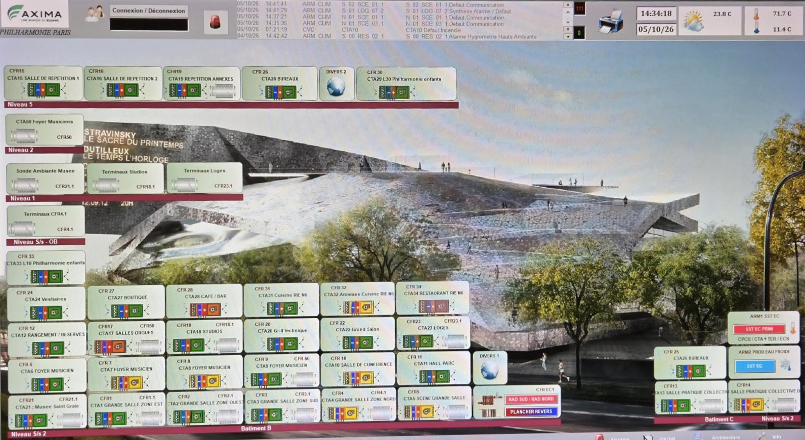
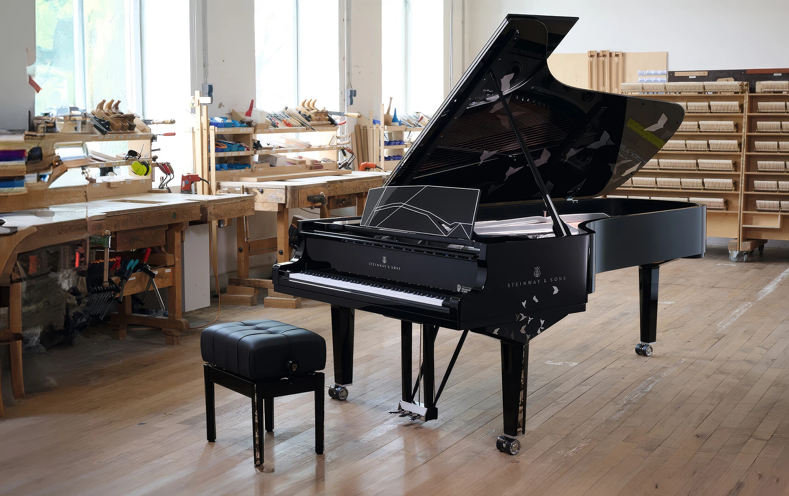

1. Introduction & Chiffres Clés
L'édifice d'exception conçu par les Ateliers Jean Nouvel.
2. L'Anatomie du Bâtiment (Comment ça marche ?)
Réseaux urbains centralisés et supervision GTB en temps réel.
Les Réseaux Urbains
Afin d'assurer le confort thermique et la climatisation du bâtiment sans utiliser de groupes frigorifiques autonomes volumineux, la Philharmonie est directement raccordée aux réseaux urbains parisiens :
- ● CPCU (Chauffage Urbain) : Alimentation en vapeur chaude pour le chauffage des espaces et l'humidification contrôlée de l'air.
- ● Fraîcheur de Paris (Froid Urbain) : Distribution d'eau glacée pour le rafraîchissement des salles de concert, des studios et des locaux techniques.
- ● Réseau d'Eau : Alimentation et gestion centralisée des fluides optimisée.
Cœur Électrique & Supervision GTB

Page d'accueil de la gestion technique du bâtiment affichant nos CTA et les informations générales en temps réel.
3. Le Maintien du Climat : Une Contrainte Artistique
Protéger le bois, les cordes et les mécanismes précieux des instruments.
🎻 Hygrométrie de Précision
Tolérance de variation d'humidité strictement contrôlée pour éviter le dessèchement ou la déformation du bois des instruments patrimoniaux et de collection.
🎹 Pianos de Concert
Les pianos de concert conservés en réserve nécessitent une stabilité de température et d'hygrométrie constante avant leur installation sur scène.
🎼 L'Orgue
L'orgue intégré à la grande salle est composé de milliers de tuyaux extrêmement sensibles aux écarts thermiques, influençant directement la justesse de l'accordage.

Ateliers et espaces de stockage des pianos de concert
4. Bilan Énergétique : La Chasse au Gaspillage (2022 - 2025)
Évolution des consommations et actions d'efficacité énergétique.
Historique des Consommations
Données de 2018 à 2025
Réalisé fin 2025
Passage intégral en éclairage LED pour les projecteurs scéniques, les espaces publics et l'illumination architecturale.
Déploiement 2025
Installation de capteurs intelligents dans l'ensemble des zones d'occupation intermittente et circulations techniques.
Programmation Stricte
Ajustement fin du fonctionnement des centrales de traitement d'air (CTA) et des éclairages selon l'occupation réelle des salles.
5. Cap vers l'Avenir : L'Énergie de Demain
Smart grid interne et projets d'autoconsommation.
☀️ Le Projet Solaire

Nous avons pour projet la mise en service de ces panneaux solaires en toiture afin d'alimenter directement le bâtiment en autoconsommation. Cette installation stratégique permettra de couvrir une partie significative du talon de consommation électrique permanent.
⚡ Supervision TGBT

Tous les départs de notre tableau électrique principal ont été entièrement reliés à la GTB. Cela nous permet de mieux visualiser les dérives potentielles et de pouvoir optimiser nos consommations d'énergie pour l'avenir.
🌬️ Ventilation Salle Boulez

Interface dédiée de notre supervision permettant de suivre en direct et avec une grande précision l'hygrométrie, la température et les débits d'air au sein de la Grande Salle Pierre Boulez.